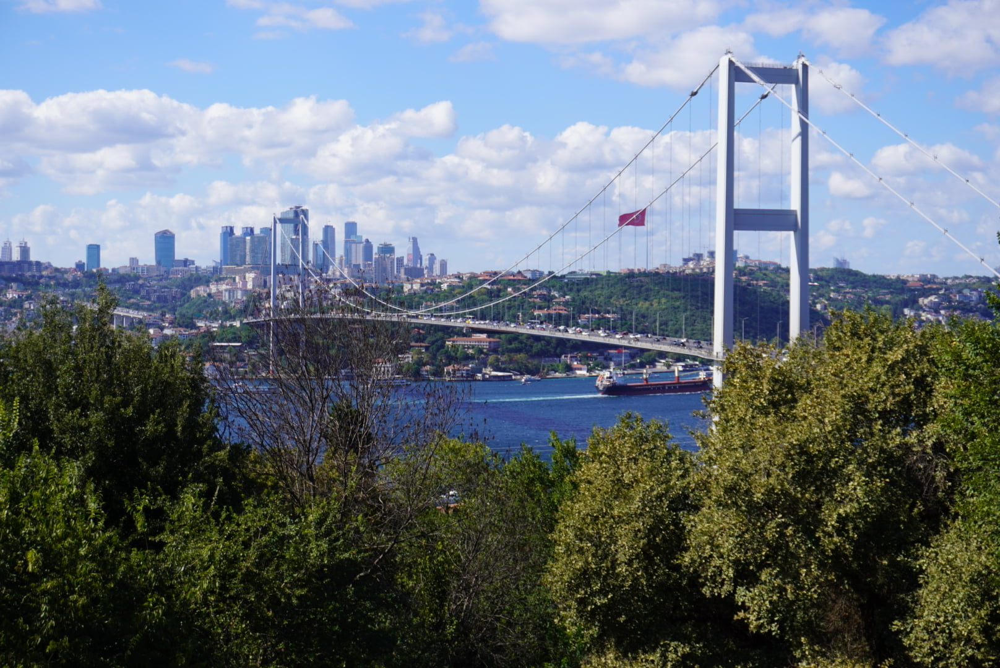

Welcome to the Wonderful World of Turkiye!
Thinking of heading to the ago old land of what was constantinople? Here you'll learn more about some of the must-visit places if you ever find yourself in the wonderful land of the Turks! Our destinations are all conveniently located in Istanbul, so no cross-country trecks will be required
First Stop: Nakkaştepe
Istanbul is an amazingly unique city! On of the many things that makes it so special is the fact that Istanbul is the only city on the planet that is placed in 2 continents; Europe, and Asia! Located at the near tip of the Asian side of Istanbul is C! Nakkaştepe is a beautiful parks that sits atop the hillside facing the Bosphorus Straits and cascades naturally down the hill as a beautiful park.
At the park theres tons to see and do! During the summer months specifically, it's a popular place for wedding photos and photoshoots in general. You can zipline from the top of the park to the bottom after picking up some icecream from one of the many vendors around the park. You can also follow the directories posted all around the park and try out some of the cafes and sightseeing spots in the park to get a better view of the suspension bridge that sits just outside of the park's boundaries! You could easily spend a few hours here, and if you start the trek at the top of the park, then by the time you get to the bottom, you'll have had plenty to see and do, and be ready for the rest of the adventures and sights to see at the bottom!